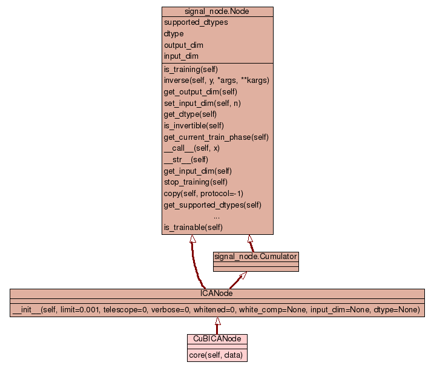

Class FDANode
source code

Perform a (generalized) Fisher Discriminant Analysis of its
input. It is a supervised node that implements FDA using a
generalized eigenvalue approach.
FDANode has two training phases and is supervised so make sure to
pay attention to the following points when you train it:
- call the 'train' function with *two* arguments: the input data
and the labels (see the doc string of the train method for details)
- if you are training the node by hand, call the train function twice
- if you are training the node using a flow (recommended), the
only argument to Flow.train must be a list of (data_point,
label) tuples or an iterator returning lists of such tuples,
*not* a generator. The Flow.train function can be called just
once as usual, since it takes care of "rewinding" the iterator
to perform the second training step.
More information on Fisher Discriminant Analysis can be found for
example in C. Bishop, Neural Networks for Pattern Recognition,
Oxford Press, pp. 105-112.
Internal variables of interest:
self.avg -- Mean of the input data (available after training)
self.v -- Transposed of the projection matrix, so that
output = dot(input-self.avg, self.v)
(available after training)
|
_get_train_seq(self)
|
|
__init__(self,
input_dim=None,
output_dim=None,
dtype=None)
|
|
_check_train_args(self,
x,
cl)
|
|
_update_means(self,
x,
lbl)
|
|
_train_means(self,
x,
cl)
|
|
_stop_means(self)
|
|
_update_SW(self,
x,
lbl)
|
|
_train_fda(self,
x,
cl)
|
|
_stop_fda(self)
|
|
train(self,
x,
cl)
Update the internal structures according to the input data 'x'.
|
|
_execute(self,
x,
range=None)
|
|
execute(self,
x,
range=None)
Compute the output of the FDA projection.
|
|
_inverse(self,
y)
|
__init__(self,
input_dim=None,
output_dim=None,
dtype=None)
(Constructor)
| source code |
None
-
|
Update the internal structures according to the input data 'x'.
x -- a matrix having different variables on different columns
and observations on the rows.
cl -- can be a list, tuple or array of labels (one for each data point)
or a single label, in which case all input data is assigned to
the same class.
-
|
Compute the output of the FDA projection.
if 'range' is a number, then use the first 'range' functions.
if 'range' is the interval=(i,j), then use all functions
between i and j.
-
|